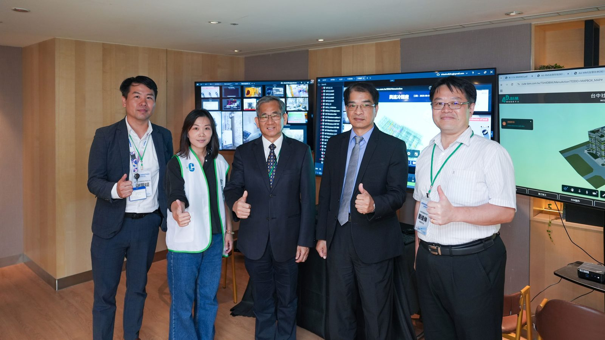
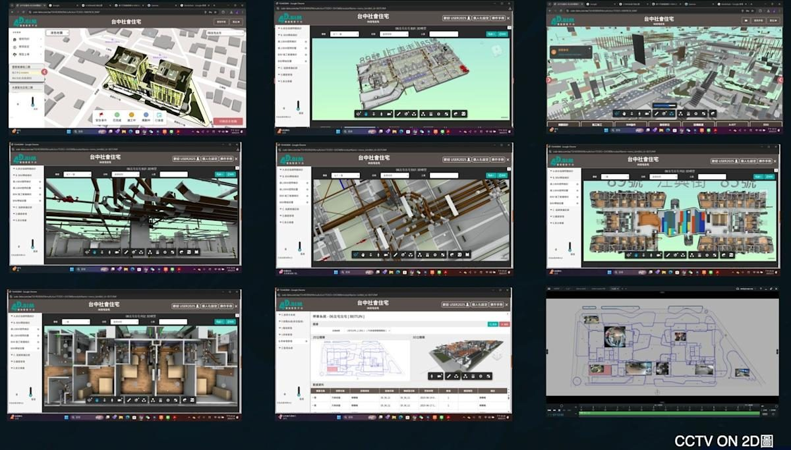

ARTIFICIAL INTELLIGENCE INTEGRATED VIRTUAL BIM
第六代智慧建築
Aiii VBIM
讓台灣的資金、技術與管理經驗跨越國界，掌握全球資產，打造超級戰情室。
星宴國際開發集結建築工程、BIM 技術、AI 人工智慧、影像辨識、物聯網、雲端平台及大數據分析等領域專家，歷時多年投入研發，打造新世代數位孿生管理平台。從設計、施工、驗收、交付到營運，讓建築成為具有感知、分析與管理能力的智慧資產。

SIX CORE VALUES
六大核心價值
{{p.no}}{{p.t}}{{p.d}}
FROM DESIGN TO OPERATIONS
從設計到營運，每一筆資料都接得下去
原有建築流程把設計、圖說、施工、影像、設備與營運拆成不同系統。Aiii VBIM 把這些資訊重新整合，讓每一個階段都能被追蹤、被理解、被延續，最後形成完整的建築數位資產。
{{s.en}}{{s.zh}}{{s.d}}
COMPETITIVE EDGE
傳統 BIM 管模型，Aiii VBIM 管整個真實世界
{{e.t}}{{e.d}}
傳統 BIM／傳統工程管理— {{o}}
Aiii VBIM 綜合智慧平台✓ {{n}}
PRODUCT FAMILY & TEAM
產品家族與研發團隊
{{f.n}}{{f.t}}{{f.d}}
共同開發星宴國際開發 × 星創科技 × 星賀建設集結建築工程、BIM、AI、影像辨識、物聯網、雲端與大數據專家團隊。
繁星計劃開放合作，共創智慧城市匯聚建築、醫療、能源、科技與再生產業夥伴，一曜再生已加入 Aiii VBIM 國際戰略合作夥伴生態系。
IN THE FIELD
真實畫面，真實場域
不是示意圖——以下是 Aiii VBIM 實際運作的現場照片與系統畫面。

